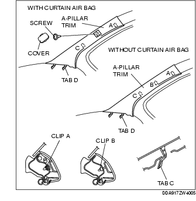

A-pillar trim removal/installation
1. Partially peel back the seaming welt.
2. Remove the cover and the screw. (with curtain air bag module)

3. Pull the A-pillar trim outward, disengage clips A and B, and draw out tab C from the body.
4. Pull out tabs D from the dashboard, then remove the A-pillar trim.
5. Install in the reverse order of removal.